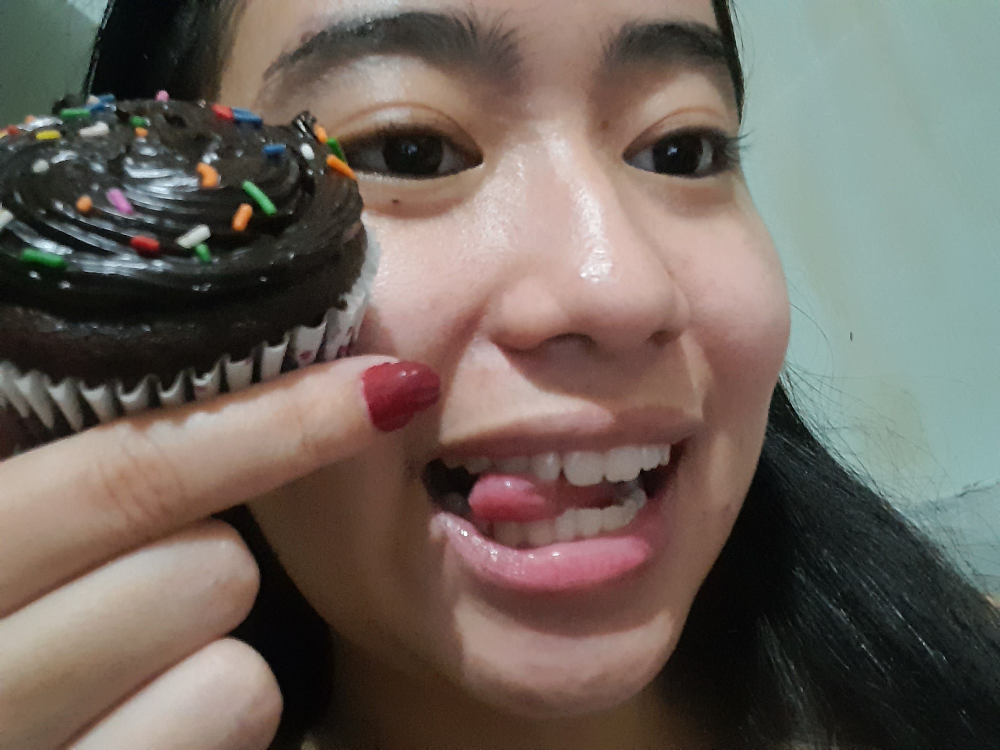

we’re talking abt the seminar btw hahaha i didn’t get to ask a question sa speaker so siya na lang tinanong ko HAHAHAHHASHDHAHSHDHAS NAKAKAINIS ANG POGI NAKAKAINISSSSSS NAKAKAASAR no one ask me if nap-process ko pa yung mga sagot niya HAHFKJAHSDFKJASHD kasi HINDIII TEHH KINIKILIG LANG AKOOOO NAKAKAASAR
💬 1🔠2â¤ï¸ 3📤

Javi @banan_aghhh · 45m
Very nag papakilig naman this girl, the seminar is about mental health kasi, kylie doesn’t know nasisiraan na ko ng ulo sa kilig HAHAHAHAHAHAHAH T-T
Kylie @georgiepremium · 1h
Hindi ako tumatanggap ng thank you pre pakasalan mo ako
💬 1🔠2â¤ï¸ 14📤
Javi @banan_aghhh · 45m
AKO DINNNN HINDI NAG AACCEPT NG THANK YOU, “YES JAVIER I WILL MARRY YOU†YAN LANG INAACCEPT KO
Kylie @georgiepremium · 1h
Magpari ka na lang pre tamo tuwing may misa ka present ako araw araw kitang mumultuhin pag di tayo kinasal pag kami di kinasal ewan ko na lang Talaga
💬 1🔠3â¤ï¸ 12📤
Javi @banan_aghhh · 45m
Pag nag pari Talaga ako and kinasal ka sa iba hindi ko kayo babasbasan yung holy water ko galing sa kanal, tapos ang sasabihin ko “I may kiss the bride†magalit na asawa mo kung magalit
Kylie @georgiepremium · 1h
Sana ma-propose na siya bukas (he’s literally in manila (we aren’t even together yet (we haven’t even graduated yet (what the fuck is wrong with me bro)))
💬 1🔠3â¤ï¸ 11📤
Javi @banan_aghhh · 45m
Ready na po ang paper rings, paper from exams, quizzes, and thesis manuscripts HAHAHAHAHAHAHA . I MISS YOU SAY YES NA PLEASEE
Kylie @georgiepremium · 1h
Sobrang mema hahahaha crush na crush ko nan ga siya : (
💬 1🔠3â¤ï¸ 11📤
Javi @banan_aghhh · 45m
blehhh
Kylie @georgiepremium · 1h
Miss na miss ko na siya so much these exams are killing me GUSTO KO NA SIYA MAKITAAAAA PLEASE FREE MEEEEE
💬 1🔠3â¤ï¸ 11📤
Javi @banan_aghhh · 45m
I MISS YOU MOREEE, next time I’ll leech na sayo di na ko aalis sa eyes mo :>
Kylie @georgiepremium · 1h
He’s such a nerd [ very loving, very affectionate] It’s a website btw HAHASHDAHSAJSAJKSD ang tagal ko raw kumain he got bored so he made a website where when u tap the screen fireworks pop up LIKE MY FAVORITE FLOWERS !!!! and then nag-pop photos ko at the end HAHHAAHDADAD NAKAKAASARRRR crush na crush ako
💬 1🔠3â¤ï¸ 11📤
Javi @banan_aghhh · 45m
HAHAHAHHAHAHAA idk if compliment pero may lovingly and affectionate so plus points <3, epic fail nga yung flowers T-T stress